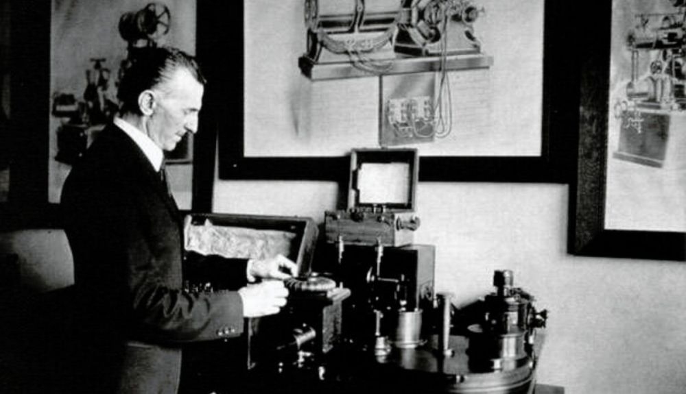

Nikola Tesla (1856–1943) was a Serbian-American inventor, electrical engineer, physicist, and futurist,
considered one of the most influential pioneers of modern electricity. His work in alternating current,
electromagnetism, radio, wireless energy, and electric motors transformed the industrial and technological world.
Although he did not receive the recognition he deserved during his lifetime, today he is regarded as one of the
greatest geniuses in the history of science.
Childhood and Education
Tesla was born in Smiljan, in what is now Croatia. From a young age he demonstrated exceptional memory and strong
skills in mathematics. He studied electrical engineering at the Polytechnic Institute of Graz and at Charles University
in Prague. Although he did not formally complete his university studies, his talent and analytical capacity far exceeded
the academic programs of his time.
Early Work and Arrival in the United States
Before emigrating, Tesla worked in telegraph and electrical companies in Europe, standing out for his designs of motors
and electrical systems. In 1884 he traveled to the United States with a letter of recommendation for Thomas Edison.
He was hired by Edison Machine Works, although disagreements soon arose due to conceptual differences:
Edison supported direct current (DC), while Tesla promoted alternating current (AC), which was superior for transmitting
electricity over long distances.

The War of the Currents
Tesla partnered with George Westinghouse, who supported his alternating current system. This began the so-called
"War of the Currents", an industrial and media battle between Edison (DC) and Tesla (AC).
Tesla’s victory was solidified when his system was chosen to illuminate the 1893 Chicago World’s Fair and for the
construction of the Niagara Falls hydroelectric plant, the world’s first major AC power system.
Inventions and Scientific Contributions
Tesla patented more than 300 inventions. Among his most revolutionary contributions are:
The Alternating Current Motor
He designed the induction motor and the polyphase system, the foundation of modern electrical infrastructure.
The Tesla Coil
A resonant transformer capable of generating extremely high voltages. It is still used in radiofrequency,
communications, and scientific research.
Radio and Wireless Communication Systems
Tesla demonstrated wireless transmissions before Guglielmo Marconi. In 1943, the U.S. Supreme Court officially
recognized his patents as fundamental to radio.
Wireless Energy
In his Colorado Springs laboratory and at Wardenclyffe Tower, he worked on transmitting electrical energy without wires
over long distances. Although the project was never completed, his ideas foreshadowed technologies such as Wi-Fi and
wireless charging.
X-Rays and Electromagnetic Fields
He investigated high-energy electromagnetic radiation and created one of the first devices to produce X-ray images.
Later Years
Despite his genius, Tesla faced economic difficulties due to unfavorable business decisions and because many
investors considered his ideas too advanced. He spent his final years in New York hotels, where he continued proposing
futuristic projects such as remote-controlled drones and defense systems based on energy beams.
He died in 1943, practically forgotten.
Legacy
Tesla’s work is fundamental to electronics, energy, communications, and modern engineering. Today he is considered a
visionary ahead of his time. In his honor, the unit of magnetic field in the International System was named after him:
the tesla (T). His figure has been revalued in science and popular culture, representing creativity, innovation,
and thinking beyond conventional limits.